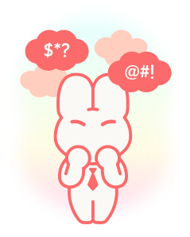

말은 열정 넘치는데, 이 사람, 말이 좀 많네...
“두루뭉술 낭만가형”
추상적이고
뭉뚱그린 표현
뭉뚱그린 표현
말은 길지만
요지가 약함
요지가 약함
직무 연관성
연결 부족
연결 부족
당신은 말이 많지만, 핵심이 약한 유형입니다.
경험을 멋있게 말하고 싶어 하지만,
정작 무엇이 대단한 건지 명확하게
전달되지 않을 때가 있습니다.
당신의 말에는 진심이 담겨 있지만,
때때로 구조나 목적이 흐릿해 듣는 사람이
내용을 따라가기 어려워질 수 있어요.
따라서 면접관 입장에서는 호감은 느끼지만,
“그래서 이 사람이 어떤 사람이지?”라는
의문이 남게 됩니다.
두루뭉술 낭만가형을 위한
업빗의 면접 TIP!
"당신의 말은 따뜻하지만,
지금은 구체적인 근거가 필요합니다."
말에 "구조"를 입히세요.
경험은 상황(S)-행동(A)-결과(R)
순으로 정리하고,
직무와 연결 짓는 문장을 꼭 넣어보세요.
말의 감정은 유지하되,
'구체성'이 들어가야 설득됩니다.